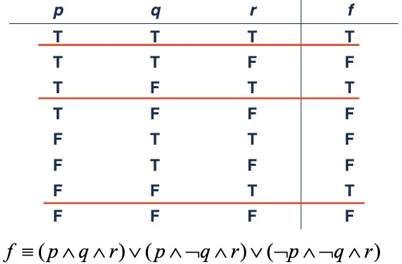

Chapter 01: The Foundations:Logic and Proofs¶
Propositional Logic¶
Proposition¶
定义：命题是一个非真即假的陈述句（不可能既真又假） 命题真值：T（1），F（0） 命题一般用字母 \(p,q,r,s\) 等来标记
Forms of Propositions and Logical Connectives¶
原子命题（Atomic Proposition）: 没有逻辑连词，仅单个命题。 复合命题（Compound Proposition）: 由逻辑连词和命题构造而成。 逻辑连词（Logical Connectives）：否定（NOT），与（AND），或（OR），异或（XOR），条件（if-then），当且仅当（if and only if）
Negation（NOT）¶
用 \(\neg\)p 表示命题 p 的否定，真值表如下：
| p | \(\neg\) p |
|---|---|
| T | F |
| F | T |
Conjunction（AND）¶
用 p\(\land\)q 表示 p 与 q，当 p，q 均为 T 时值为 T，真值表如下：
| p | q | p\(\land\)q |
|---|---|---|
| T | T | T |
| T | F | F |
| F | T | F |
| F | F | F |
Disjunction（OR）¶
用 p\(\lor\)q 表示 p 或 q，当 p，q 均为 F 时值为 F，真值表如下：
| p | q | p\(\lor\)q |
|---|---|---|
| T | T | T |
| T | F | T |
| F | T | T |
| F | F | F |
Exclusive Or（XOR）¶
用 p\(\bigoplus\)q 表示 p 异或 q，当 p，q 仅有一个是 T 时值为 T，真值表如下：
| p | q | p\(\bigoplus\)q |
|---|---|---|
| T | T | F |
| T | F | T |
| F | T | T |
| F | F | F |
或与异或的区别：或可以两者皆可，异或只能二者选一。 e.g.1. Students who have taken calculus or computer science can take this class.（这里的 or 是或） e.g.2. Soup or salad comes with this entrée.（这里的 or 是异或）
Implication（if - then）¶
用 p\(\rightarrow\)q 表示如果 p 那么 q，当 p 为 T，q 为 F 时值为 F，真值表如下：
| p | q | p\(\rightarrow\)q |
|---|---|---|
| T | T | T |
| T | F | F |
| F | T | T |
| F | F | T |
其他表达 p\(\rightarrow\)q 的方式： - if p,then q - p implies q - if p,q - p only if q - p is sufficient for q - a sufficient condition for q is p - q if p - q whenever p - q when p - q is necessary for p - q follows from p - a necessary condition for p is q - q unless \(\neg\)p
Biconditional（if and only if）¶
用 p\(\leftrightarrow\)q 表示当且仅当 p,q,当 p 和 q 相同时值为 T，真值表如下：
| p | q | p\(\leftrightarrow\)q |
|---|---|---|
| T | T | T |
| T | F | F |
| F | T | F |
| F | F | T |
其他表达 p\(\leftrightarrow\)q 的方式： - p is necessary and sufficient for q - if p then q and conversely（vice versa） - p iff q
Equivalent Propositions¶
定义：当两个命题始终都有相同的真值时，称为等价命题（Equivalent Propositions）。
Precedence¶
| Operator | 优先级（Precedence） |
|---|---|
| （ ） | 1 |
| \(\neg\) | 2 |
| \(\land\) | 3 |
| \(\lor\) | 4 |
| \(\rightarrow\) | 5 |
| \(\leftrightarrow\) | 6 |
Applications of Propositional Logic¶
Translating Sentences¶
- 找出原子命题并使用命题变量表示
- 确定适当的逻辑连词
- 用逻辑表达式表达句子
e.g.“If I go to Harry’s or to the country, I will not go shopping.”
- p: I go to Harry's.
- q: I go to the country.
- r: I will go shopping.
\(\Rightarrow\) If p or q then not r. 即 \((p \lor q)\rightarrow \neg r\)
Consistent System Specifications¶
定义：对于一系列命题，如果可以将真值分配给命题变量，使得每个命题都是真的，那么这一系列命题变量是一致的。
e.g.对于下列命题：
- “The diagnostic message is stored in the buffer or it is retransmitted.”
- “The diagnostic message is not stored in the buffer.”
- “If the diagnostic message is stored in the buffer, then it is retransmitted.”
令 p: “The diagnostic message is stored in the buffer.” q: “The diagnostic message is retransmitted.” 那么这一系列命题可以写为 p\(\lor\)q，p\(\rightarrow\)q，\(\neg\)p，当 p 为 F，q 为 T 时三个命题均为 T，所以这一系列命题是一致的。 但加入命题“The diagnostic message is not retransmitted”，那么四个命题就不一致。
Logic Puzzles¶
Propositional Equivalences¶
Tautologies,Contradictions, and Contingencies¶
恒真命题（Tautology）：始终为 T 的命题（例如 p\(\lor\)\(\neg\)p） 恒假命题（Contradiction）：始终为 F 的命题（例如 p\(\land\)\(\neg\)p） 偶然命题（Contingency）：真值不确定的命题
Logically Equivalent¶
定义：对于命题 p,q，如果命题 p\(\leftrightarrow\)q 是一个恒真命题，则称 p 和 q 是等价的（Equivalent）。 符号：p\(\Leftrightarrow\)q 或 p\(\equiv\)q 符号\(\equiv\)不是一个逻辑连词，命题 p\(\equiv\)q 不是一个复合命题
Key Logical Equivalences¶
| Name | Equivalences |
|---|---|
| Identity laws | \(p \land T \equiv p\) \(p \lor F \equiv p\) |
| Domination laws | \(p \lor T \equiv T\) \(p \land F \equiv p\) |
| Idempotent laws | \(p \lor p \equiv p\) \(p \land p \equiv p\) |
| Double negation law | $ \neg \neg p \equiv p$ |
| Commutative laws （交换律） |
\(p \lor q \equiv q \lor p\) \(p \land q \equiv q \land p\) |
| Associative laws （结合律） |
\((p \lor q) \lor r \equiv p \lor (q \lor r)\) \((p \land q) \land r \equiv p \land (q \land r)\) |
| Distributive laws （分配律） |
\(p \lor (q \land r) \equiv (p \lor q) \land (p \lor r)\) \(p \land (q \lor r) \equiv (p \land q) \lor (p \land r)\) |
| De Morgan's laws | \(\neg (p \land q) \equiv \neg p \lor \neg q\) \(\neg (p \lor q) \equiv \neg p \land \neg q\) |
| Negation laws （否定律） |
\(p \lor \neg p \equiv T\) \(p \land \neg p \equiv F\) |
| Absorption laws （吸收律） |
\(p \lor (p \land q) \equiv p\) \(p \land (p \lor q) \equiv p\) |
| Contrapositive law | \(p \rightarrow q \equiv \neg q \rightarrow \neg p\) |
| Exportation law | \((p \land q) \rightarrow r \equiv p \rightarrow (q \rightarrow r)\) |
| Absurdity law | \((p \rightarrow q )\land (p \rightarrow \neg q) \equiv \neg p\) |
| Implication law | \(p \rightarrow q \equiv \neg p \lor q\) |
| Equivalence law | \(p \leftrightarrow q \equiv (p \rightarrow q) \land (q \rightarrow p)\) |
补充：
- \(p \land q \equiv \neg (p \rightarrow \neg q)\)
- \((p \rightarrow q) \land (p \rightarrow r) \equiv p \rightarrow (q \land r)\)
- \((p \rightarrow r) \land (q \rightarrow r) \equiv (p \lor q) \rightarrow r\)
- \((p \rightarrow q) \lor (p \rightarrow r) \equiv p \rightarrow (q \lor r)\)
- \((p \rightarrow r) \lor (q \rightarrow r) \equiv (p \land q) \rightarrow r\)
- \(p \leftrightarrow q \equiv \neg p \leftrightarrow \neg q\)
- \(p \leftrightarrow q \equiv (p \land q) \lor (\neg p \land \neg q)\)
- \(\neg (p \leftrightarrow q) \equiv p \leftrightarrow \neg q\)
广义 De Morgan's Laws：
- $\neg (p $1 \(\lor p\)2 \(\lor ...\lor p\)n) \(\equiv \neg p\)1 \(\land \neg p\)2 \(\land ... \land \neg p\)n
- $\neg (p $1 \(\land p\)2 \(\land ...\land p\)n) \(\equiv \neg p\)1 \(\lor \neg p\)2 \(\lor ... \lor \neg p\)n
e.g.1. Show that \(\neg (p \lor (\neg p \land q))\) and \(\neg p \land \neg q\) are logically equivalent. e.g.2. Show that \(((p \rightarrow q) \rightarrow r) \rightarrow ((r \rightarrow p) \rightarrow (s \rightarrow p))\) is a tautology.
Propositional Satisfiability¶
定义：对于一个复合命题，如果有一组真值取值能让其为 T，则该复合命题是可满足的（Satisfiable）；如果所有真值取值其值都为 F，则该复合命题是不可满足的（Unsatisfiable）。 e.g. Determine the satisfiability of the following compound propositions: \((p \lor q \lor r) \land (\neg p \lor \neg q \lor \neg r)\) Solution: Satisfiable. Assign T to p and F to q.
Other logical operators¶
- Sheffer stroke（ | ） : \(p|q \equiv \neg (p \land q)\) （NAND） \(p|p \equiv \neg p\)
- Peirce arrow （ \(\downarrow\) ）: \(p \downarrow q \equiv \neg (p \lor q)\) （NOR） \(p \downarrow p \equiv \neg p\)
The Dual of a Compound Proposition¶
定义：对于一个仅含逻辑运算符 \(\lor , \land\) 和 \(\neg\) 的复合命题，它的对偶（Dual）即为将所有的 \(\lor\) 替换为 \(\land\) ，所有的 \(\land\) 替换为 \(\lor\) ，所有的 T 替换为 F ，所有的 F 替换为 T 。记复合命题 S 的对偶为 S*。 e.g.1. \(S = (p \lor \neg q) \land r \lor T \Rightarrow S^* = (p \land \neg q) \lor r \land F\) e.g.2. \(S = (p \land q) \rightarrow (p \lor q) \equiv \neg (p \land q) \lor (p \lor q) \Rightarrow S^* = \neg(p \lor q) \land (p \land q)\) 定理（Theorem）：对于两个复合命题 s 和 t ，\(s \equiv t \Leftrightarrow s^* \equiv t^*\)
Functionally Complete Collection of Logical Operators¶
定义：如果每一个复合命题都可以逻辑等价于一个仅含某一系列逻辑运算符的复合命题，那么称这一系列逻辑运算符是完备的。 e.g. {\(\neg，\land，\lor，\rightarrow，\leftrightarrow\)} ，{\(\neg，\land，\lor\)} ，{\(\neg，\land\)} ，{\(\neg，\lor\)} ，{｜} ，{ \(\downarrow\) }均是完备的运算符。
Propositional Normal Forms¶
Disjunctive Normal Form（DNF）¶
- Literal ：一个命题变量或者它的否定。
- 合取从句（Conjunctive Clauses）: 由多个 Literal 通过合取符号（\(\land\)）形成。 e.g. \(p \land q，p \land \neg q，\neg p \land q，\neg p \land \neg q\)
- DNF定义： 如果一个逻辑表达式被写作析取形式（即均由 \(\lor\) 连接），其中所有的子式均为 Literal 的合取（即为合取从句），则称这个逻辑表达式为析取范式（Disjunctive Normal Form）。 e.g. \((p \land q) \lor (p \land \neg q)\) 是一个析取范式，但是 \(p \land (p \lor q)\) 不是一个析取范式。
Conjunctive Normal Form（CNF）¶
定义：如果一个逻辑表达式被写作合取形式（即均由 \(\land\) 连接），其中所有的子式均为 Literal 的析取（即为析取从句)，则称这个逻辑表达式为合取范式（Conjunctive Normal Form）。

Theorem¶
所有表达式 A 永远都可以与某个合取范式（或者析取范式）等价。
How to obtain normal form¶
- 使用以下等价表达式消除 \(\rightarrow ，\leftrightarrow\) \(p \rightarrow q \equiv \neg p \lor q\) \(p \leftrightarrow q \equiv (p \rightarrow q) \land (q \rightarrow p)\)
- 使用以下等价表达式，化简含 \(\neg，\land，\lor\) 的表达式，使得每个 \(\neg\) 均只修饰一个原子命题。 $\neg (p $1 \(\lor p\)2 \(\lor ...\lor p\)n) \(\equiv \neg p\)1 \(\land \neg p\)2 \(\land ... \land \neg p\)n \(\neg \neg p \equiv p\)
- 使用交换律、结合律、分配律获得范式
e.g.1. 将表达式 \(\neg (p \lor q) \leftrightarrow (p \land q)\) 转换为范式。
e.g.2. 找到合适的 p ，q 取值，使得表达式 \((p \rightarrow q) \rightarrow p\) 值为真。

Full Disjunctive Normal Form¶
Minterm¶
一个小项（Minterm）即为 Literal 的合取，其中每个命题变量都只出现一次。 e.g. 如果一个表达式有 p，q，r 三个命题变量，那么 \(p \land \neg q \land r\) 是一个小项，但是 \(p \land \neg q\) 和 \(p \land \neg p \land r\) 就不是一个小项。
Definition of Full Disjunctive Normal Form¶
如果一个表达式是小项的析取，那么这个表达式被称为全析取范式（Full Disjunctive Normal Form）。 e.g. \((p \land q \land r) \lor (p \land q \land \neg r) \lor (\neg p \land q \land r) \lor (\neg p \land \neg q \land \neg r)\)就是一个全析取范式
How to obtain full disjunctive normal form¶
首先，获得一个析取范式，利用否定律和分配律获得全析取范式。 \(A \equiv A \land (q \lor \neg q) \equiv (A \land q) \lor (A \land \neg q)\) e.g. 将表达式 \((p \land q) \lor (\neg p \land r) \lor (q \land r)\) 转换为全析取范式。

Full disjunctive normal form from truth tables¶
找到使最终答案为 T 的取值情况，将这些取值情况用析取形式组合后即可。
e.g.1.
e.g.2.

e.g.3.

Predicates and Quantifiers¶
Introducing Predicate Logic¶
谓词逻辑（Predicate Logic）有以下的特点： - 变量（Variables）：x , y , z - 谓语（Predicates）：P , M - 量词（Quantifiers）
Propositional Functions¶
当命题函数（Propositional Functions）的变量被其定义域中的一个值代替或者被量词约束时， 命题函数成为一个命题。 e.g.1. 考虑 “\(x>0\)” 这一命题 ，可以用 \(P(x)\) 来定义，这里 P 代表性质 “比 0 大” ，x 则为变量 若定义域（Domain，通常用字母 U 来表示）为整数，那么 \(P(-3)\) 为 False ，\(P(0)\) 为 False ，\(P(3)\) 为 True 。 e.g.2. 记 “ \(x+y=z\) ” 为 R( x , y , z ), U 为整数 ，那么 R( 2 , -1 , 5 ) 为 False ，R( 3 , 4 , 7 ) 为 True ，但是 R( x , 3 , z ) 就不是一个命题。 如果一个语句包含 \(n\) 个变量 \(x\)1，\(x\)2，...，\(x\)n，那么这个语句可以被记为 \(P( x\)1,\(x\)2，...，\(x\)n) 形式为 \(P( x\)1,\(x\)2，...，\(x\)n) 的语句是命题函数 \(P\) 在 \(n\) 元组 \(( x\)1,\(x\)2，...，\(x\)n) 的值，\(P\) 也称为 \(n\) 位谓词 或 \(n\) 元谓词
Compound Expressions¶
- 命题逻辑中的连词在谓词逻辑中也是适用的。（ 例如 \(P(3) \land P(4)\) ）
- 但是含有变量的表达式并不是命题，因此也没有真值。（ 例如 \(P(3) \land P(y)\) ）
Preconditions and Postconditions¶
谓词逻辑还可以用来验证计算机程序输出正确与否。 - 前置条件（Preconditions）：描述合法输入的语句 - 后置条件（Postconditions）：程序运行的输出应该满足的条件 e.g. 考虑下面交换两个变量 x 和 y 的值的程序：
用谓词 \(P(x,y)\) 来表示前置条件，可以指语句“ \(x=a,y=b\) ”，这里 \(a,b\) 是在运行程序之前 \(x\) 和 \(y\) 的值。 用谓词 \(Q(x,y)\) 来表示前置条件，指语句“ \(x=b,y=a\) ”。Quantifiers¶
我们需要量词（Quantifiers）来表达“全部”和“一些”的意思，量词也被用于在表达式中约束变量 \(x\)。
Universal Quantifier¶
全称量词（Universal Quantifier）用于表达“对于所有的...”，用记号 \(\forall\) 来表示。用 \(\forall x P(x)\) 来表示对于定义域中所有的 \(x，P(x)\) 均为 True / 对于所有 \(x，P(x)\)。
Existential Quantifier¶
存在量词（Existential Quantifier）用于表达"存在..."，用记号 \(\exists\) 来表示。用 \(\exists x P(x)\) 来表示对于定义域中的某些 \(x，P(x)\) 为 True / 至少有一个 \(x，P(x)\)。
Properties of Quantifiers¶
命题 \(\exists x P(x)\) 和 \(\forall x P(x)\) 的真值取决于命题函数 \(P(x)\) 和定义域 U。
| 命题 | 什么时候为真 | 什么时候为假 |
|---|---|---|
| \(\forall x P(x)\) | 对每一个\(x,P(x)\)都为真 | 有一个\(x\)，使\(P(x)\)为假 |
| \(\exists x P(x)\) | 有一个\(x\)，使\(P(x)\)为真 | 对每一个\(x,P(x)\)都为假 |
Thinking about Quantifiers as Conjuctions and Disjunctions¶
如果定义域是有限的，那么全称量化的命题等价于一些不含量词的命题的合取，存在量化的命题等价于一些不含量词的命题的析取。
e.g. 如果 \(U\) 由整数 \(1,2,3\) 组成：
\(\forall x P(x) \equiv P(1) \land P(2) \land P(3)\)
\(\exists x P(x) \equiv P(1) \lor P(2) \lor P(3)\)
就算定义域是无限的，我们也可以这么来考虑量词，但是等价命题将会无限长。
Uniqueness Quantifier¶
用 \(\exists !x P(x)\) 来表示有且仅有一个\(x\)，使得 \(P(x)\) 为 True。
e.g.1. 如果 \(P(x)\) 表示“\(x+1=0\)”，\(U\)为全体整数，那么 \(\exists!xP(x)\) 为 True 。
e.g.2. 如果 \(P(x)\) 表示“\(x>0\)”，那么 \(\exists!xP(x)\) 为 False 。
事实上，唯一性量词（Uniqueness Quantifier）可以用全称量词和存在量词等价替换，\(\exists!xP(x) \equiv \exists x (P(x) \land \forall y (P(y) \rightarrow y=x))\)
Precedence of Quantifiers¶
量词 \(\forall\) 和 \(\exists\) 比所有逻辑运算符优先级都高。
e.g. \(\forall x P(x) \lor Q(x) \equiv (\forall x P(x)) \lor Q(x) \not \equiv \forall x (P(x)\lor Q(x))\)
Logical Equivalences¶
| NAME | Equivalence |
|---|---|
| De Morgan's Laws | \(\neg \forall x P(x) \equiv \exists x \neg P(x)\) \(\neg \exists x P(x) \equiv \forall x \neg P(x)\) |
| Distributive Laws （分配律） |
\(\forall x (A(x) \land B(x)) \equiv \forall x A(x) \land \forall x B(x)\) \(\exists x (A(x)\lor B(x)) \equiv \exists x A(x) \lor \exists x B(x)\) \(\exists x (A(x) \land B(x))\) \(\Rightarrow\) \(\exists x A(x) \land \exists x B(x)\) \(\forall x A(x) \lor \forall x B(x)\) \(\Rightarrow\) \(\forall x (A(x) \lor B(x))\) \(\exists x A(x) \land \exists x B(x)\) \(\not \Rightarrow\) \(\exists x (A(x) \land B(x))\) \(\forall x (A(x) \lor B(x))\) \(\not \Rightarrow\) \(\forall x A(x) \lor \forall x B(x)\) |
补充：（ \(P,B\) 中不含 \(x\) ）
-
\(\forall x A(x) \lor P \equiv \forall x (A(x) \lor P)\)
-
\(\forall x A(x) \land P \equiv \forall x (A(x) \land P)\)
-
\(\exists x A(x) \lor P \equiv \exists x (A(x) \lor P)\)
-
\(\exists x A(x) \land P \equiv \exists x (A(x) \land P)\)
-
\(\forall x (B \rightarrow A(x)) \equiv B \rightarrow \forall x A(x)\)
Proof：\(\forall x (B \rightarrow A(x)) \equiv \forall x (\neg B \lor A(x)) \equiv \neg B \lor \forall x A(x) \equiv B \rightarrow \forall x A(x)\)
-
\(\exists x (B \rightarrow A(x)) \equiv B \rightarrow \exists x A(x)\)
-
\(\forall x (A(x) \rightarrow B) \equiv \exists x A(x) \rightarrow B\)
-
\(\exists x (A(x) \rightarrow B) \equiv \forall x A(x) \rightarrow B\)
Nested Quantifiers¶
Definition¶
嵌套量词（Nested Quantifiers）即一个量词出现在另一个量词的作用域内。
e.g. 对于命题“每一个实数都有其相反数”，我们可以写作 \(\forall x\) \(\exists y (x+y=0)\)，此时 \(x\) 和 \(y\) 的定义域均为实数。
Order of Quantifiers¶
量词的顺序非常重要（除非所有量词都是全称量词或者都是存在量词）
| 命题 | 什么时候为真 | 什么时候为假 |
|---|---|---|
| \(\forall x \forall y P(x,y)\)\(\forall x \forall y P(x,y)\) | 对于每一对 \(x,y,P(x,y)\) 都为 True | 存在一对 \(x,y,P(x,y)\) 为 False |
| \(\forall x \exists y P(x,y)\) | 对于每一个 \(x\)，都存在一个 \(y\) 使得 \(P(x,y)\) 为 True | 存在一个 \(x\)，对于每一个 \(y,P(x,y)\) 都为 False |
| \(\exists x \forall y P(x,y)\) | 存在一个 \(x\),对于每一个 \(y,P(x,y)\) 都为 True | 对于每一个 \(x\)，都存在一个 \(y\) 使得 \(P(x,y)\) 为 False |
| \(\exists x \exists y P(x,y)\) \(\exists y \exists x P(x,y)\) |
存在一对 \(x,y,P(x,y)\) 为 True | 对于每一对 \(x,y,P(x,y)\) 都为 False |
Translating Nested Quantifiers into English¶


Negating Nested Quantifiers¶
De Morgan 定律也同样适用于嵌套量词的否定。
Prenex Normal Forms¶
构造前束范式（Prenex Normal Forms）的主要目的在于简化嵌套量词命题的表面结构，主要形式为 \(Q_1x_1Q_2x_2...Q_nx_nB\)，其中 \(Q_i(i=1,...,n)\) 是量词 \(\forall\) 或者 \(\exists\) ，\(B\) 不含量词。
所有的表达式都可以被转换为前束范式。转换方式如下：
- 消除命题中所有的 \(\rightarrow\) 和 \(\leftrightarrow\)
- 使所有否定符号 \(\neg\) 仅仅为 literal 的一部分
- 将变量标准化（如果有必要的话）
- 将所有全称量词挪到表达式的最前面
e.g. 将表达式 \(\forall x ((\exists y R(x,y) \land \forall y \neg S(x,y)) \rightarrow \neg (\exists y M(x,y) \land P))\) 转换为前束范式。
Rules of Inference¶
Arguments¶
一个用命题逻辑表达的论证（Argument）是一系列命题，除了最后一个命题其他都被称作前提（Premise），最后一个命题是结论（Conclusion）。
我们可以在一条线上表达前提，在线下表达结论，整个就形成了一个论证。
e.g.
Valid Arguments & Argument Form¶
如果一个论证的所有前提为真，蕴含着结论为真，那么这个论证是有效的（Valid）
命题逻辑中的论证形式（Argument Form）是一连串涉及命题变量的复合命题，无论用什么特定命题来替换其中的命题变量，如果前提均为真时结论为真，则称该论证形式是有效的。
一个论证形式（前提为 \(p_1,p_2,...,p_n\)，结论为 \(q\)）是有效的充要条件是 \(p_1 \land p_2 \land ...\land p_n \rightarrow q\) 是一个恒真命题。
Rules of Inference¶
| 名称 | 推理规则 | 恒真命题 |
|---|---|---|
| Modus Ponens (假言推理) |
 |
\((p \land (p \rightarrow q)) \rightarrow q\) |
| Modus Tollens (取拒式 ) |
 |
\((\neg q \land (p \rightarrow q)) \rightarrow \neg p\) |
| Hypothetical Syllogism （假言三段论） |
 |
\(((p \rightarrow q) \land (q \rightarrow r)) \rightarrow (p \rightarrow r)\) |
| Disjunctive Syllogism (析取三段论) |
 |
\((\neg p \land (p \lor q)) \rightarrow q\) |
| Addition (附加律) |
 |
\(p \rightarrow (p \lor q)\) |
| Simplification (化简律) |
 |
\((p \land q) \rightarrow q\) |
| Conjunction (合取律) |
 |
\(((p) \land (q)) \rightarrow (p \land q)\) |
| Resolution (消解律) |
 |
\(((\neg p \lor r) \land (p \lor q)) \rightarrow (q \lor r)\) |
Build Valid Arguments¶
证明一个论证是否有效的方法如下：
- 假设所有的前提是 True
- 用 1.6.3 的推理规则和逻辑等价来确定最后的结论是否为 True
e.g.1. 从命题 \(p \land (p \rightarrow q)\) 说明 \(q\) 是一个结论。
e.g.2. 说明结论 \(\neg w\) 来自于假设 \((w \lor r) \rightarrow v,v \rightarrow (c \lor s),s \rightarrow u,\neg c \land \neg u\)

如果一个结论是以 \(p \rightarrow q\) 的形式给出，那么基于 \((p_1 \land p_2 \land ...\land p_n \land p) \rightarrow q \equiv (p_1 \land p_2 \land...\land p_n) \rightarrow (p \rightarrow q)\)，我们可以将原来的问题转换为 \(p_1 \land p_2 \land ... \land p_n \land p \Rightarrow q\)
e.g.3. 说明结论 \(r \rightarrow s\) 来自于假设 \(p \rightarrow (q \rightarrow s),\neg r \lor p,q\)
Fallacies¶
对于一个谬论（Fallacy），其主要有两种情况，一种为断言结论为真，另一种为否定假设。
e.g.1. \(((p\rightarrow q)\land q)\rightarrow p\) 不是恒真命题，因为当 \(p\) 为假而 \(q\) 为真时它为假。（断言结论为真）
e.g.2. \(((p\rightarrow q)\land \neg p)\rightarrow \neg q\) 不是恒真命题，因为当 \(p\) 为假而 \(q\) 为真时它为假。（否定假设）
Handling Quantified Statements¶
| 名称 | 推理规则 |
|---|---|
| Universal Instantiation(UI) （全称实例） |
|
| Universal Generalization(UG) （全称引入） |
|
| Existential Instantiation(EI) （存在实例） |
 |
| Existential Generalization(EG) （存在引入） |
 |
e.g. 证明以下论证是有效的：

Introduction to Proofs¶
Some Terminologies¶
- 定理（Theorem）：一个能够被证明是真的语句。
- 命题（Proposition）：不太重要的定理。
- 证明（Proof）：一个证明定理为真的论证。
- 公理（Axioms）：隐含的关于数学结构的假设，或即将证明的定理的假设，或已经被证明过的定理。
- 引理（Lemma）：一个“辅助定理”或者一个需要被证明为定理的结果。
- 推论（Corollary）：一个已经被证明的定理可以直接建立起来的定理。
- 猜想（Conjecture）：一个不知道是否为真的论述。
Direct Proofs¶
直接证明法（Direct Proofs）：为了证明 \(p \rightarrow q\) 为真（ \(p\) 可能为一些假设的合取），我们假设所有的前提为真，然后证明结论是否为真。
e.g. 给出定理“如果 \(n\) 是个奇数，那么 \(n^2\) 是个奇数”的直接证明。
Proof by Contraposition¶
反证法（Proof by Contraposition）：为了证明 \(p \rightarrow q\) 为真，我们假设结论为假（即 \(\neg q\) 为真），然后证明前提为假（即 \(\neg p\) 为真）。
e.g. 证明定理“一个完美数不是一个质数”，完美数满足除了自身所有因子的和为自身（如 \(6=1+2+3\) ）

Vacuous Proof¶
空证明（Vacuous Proof）：为了证明 \(p \rightarrow q\) 为真，我们可以直接证明前提为假。

Trivial Proof¶
平凡证明（Trivial Proof）：为了证明 \(p \rightarrow q\) 为真，我们可以直接证明结论为真。
Proof by contradiction¶
归谬证明法（Proof by contradiction）：为了证明命题 \(p\) 为真，我们找到一个矛盾的论述 \(q\) （一般形式为 \(r \land \neg r\) ），使得 \(\neg p \rightarrow q\) 为真，由于 \(q\) 为假，那么 \(\neg p\) 为假，即 \(p\) 为真。
e.g. 证明有无穷多个素数
Proof of Equivalence¶
等价证明法（Proof of Equivalence）：为了证明 \(p_1,p_2,...,p_n\) 是等价的（即证明命题 \(p_1 \leftrightarrow p_2 \leftrightarrow ... \leftrightarrow p_n\) 为真），我们证明 \(p_1 \rightarrow p_2,p_2 \rightarrow p_3,...,p_{n-1} \rightarrow p_n,p_n \rightarrow p_1\) 为真
Proof Methods and Strategy¶
Exhaustive Proof and Proof by Cases¶
分情形证明法（Proof by Cases）：为了证明 \((p_1 \lor p_2 \lor ... \lor p_n) \rightarrow q\) 为真，我们分情形证明所有的 \(p_i \rightarrow q(i=1,2,...,n)\) 为真.
穷举证明法（Exhaustive Proof）：一种分情形证明法，穷尽所有可能性。
e.g. 证明“如果整数 \(n\) 不能被 \(3\) 整除，那么 \(n^2 \equiv 1(mod \space 3)\)”

Existence Proof¶
存在性证明（Existence Proof）：为了证明 \(\exists xP(x)\) 为真，我们找到定义域中的某个 \(c\) ，使得 \(P(c)\) 为真。
e.g. 证明对于每一个正整数 \(n\)，存在 \(n\) 个连续的复数。
或者我们可以假设没有定义域中的 \(c\) ，使得 \(P(c)\) 为真，然后得到矛盾。
e.g. 证明存在无理数。
Uniqueness Proofs¶
唯一性证明（Uniqueness Proofs）：为了证明存在唯一一个元素满足特定的性质（即命题 \(\exists x(P(x) \land \forall y(y \not = x \rightarrow \neg P(y)))\) ），我们可以先证明存在性（即证明存在某个元素 \(x\) 使得 \(P(x)\) 为真，然后证明唯一性（即证明如果 \(x\) 和 \(y\) 都使得 \(P(x)\) 和 \(P(y)\) 为真，那么 \(x=y\) ）